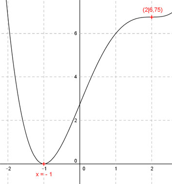

Aufgabe 96 Der Graph einer ganzrationalen Funktion 4. Grades berührt an der Stelle x = -1 die x-Achse und hat in (2|6,75) einen Sattelpunkt. Wie lautet seine Funktionsgleichung?  Allgemeine Form einer ganzrationalen Funktion 4. Grades: f(x) = ax4 + bx3 + cx2 + dx + e f’(x) = 4ax3 + 3bx2 + 2cx + d f’’(x) = 12ax2 + 6bx + 2c 5 Bedingungen: 1. Berührt an der Stelle x = -1 die x-Achse bedeutet zum einen: f(-1) = 0 --> a * (-1)4 + b * (-1)3 + c * (-1)2 + d * (-1) + e = 0 --> a - b + c - d + e = 0 I 2. Berührt an der Stelle x = -1 die x-Achse bedeutet zum anderen: f’(-1) = 0 --> 4a * (-1)3 + 3b * (-1)2 + 2c * (-1) + d = 0 --> -4a + 3b - 2c + d = 0 II 3. Hat im Punkt (2|6,75) einen Sattelpunkt bedeutet erstens: f(2) = 6,75 --> a * 24 + b * 23 + c * 22 + d * 2 + e = 6,75 --> 16a + 8b + 4c + 2d + e = 6,75 III 4. Hat im Punkt (2|6,75) einen Sattelpunkt bedeutet zweitens: f’(2) = 0 --> 4a * 23 + 3b * 22 + 2c * 2 + d = 0 --> 32a + 12b + 4c + d = 0 IV 5. Hat im Punkt (2|6,75) einen Sattelpunkt bedeutet drittens: f’’(2) = 0 --> 12a * 22 + 6b * 2 + 2c = 0 --> 48a + 12b + 2c = 0 V I * (-1) + III -a + b - c + d - e = 0 16a + 8b + 4c + 2d + e = 6,75 ----------------------------- 15a + 9b + 3c + 3d = 6,75 VI II * (-1) + IV 4a - 3b + 2c - d = 0 32a + 12b + 4c + d = 0 ----------------------- 36a + 9b + 6c = 0 VII IV * (-3) + VI -96a - 36b - 12c - 3d = 0 15a + 9b + 3c + 3d = 6,75 ---------------------------- -81a - 27b - 9c = 6,75 VIII V * (-3) + VII -144a - 36b - 6c = 0 36a + 9b + 6c = 0 --------------------- -108a - 27b = 0 IX V * 9 + VIII * 2 432a + 108b + 18c = 0 -162a - 54b - 18c = 13,5 -------------------------- 270a + 54b = 13,5 X IX * 2 + X -216a - 54b = 0 270a + 54b = 13,5 ------------------- 54a = 13,5 |:54 a = 0,25 a = 0,25 in X eingesetzt: 270 * 0,25 + 54b = 13,5 67,5 + 54b = 13,5 |-67,5 54b = -54 |:54 b = -1 a = 0,25 und b = -1 in VII eingesetzt. 36 * 0,25 + 9 * (-1) + 6c = 0 9 - 9 + 6c = 0 6c = 0 |:6 c = 0 a = 0,25 und b = -1 und c = 0 in IV eingesetzt: 32 * 0,25 + 12 * (-1) + d = 0 8 - 12 + d = 0 -4 + d = 0| +4 d = 4 a = 0,25 und b = -1 und c = 0 und d = 4 in I eingesetzt: 0,25 - (-1) - 4 + e = 0 1,25 - 4 + e = 0 -2,75 + e = 0 |+2,75 e = 2,75 Gesuchte Funktionsgleichung: f(x) = 0,25x4 - 2x3 + 4x + 2,75